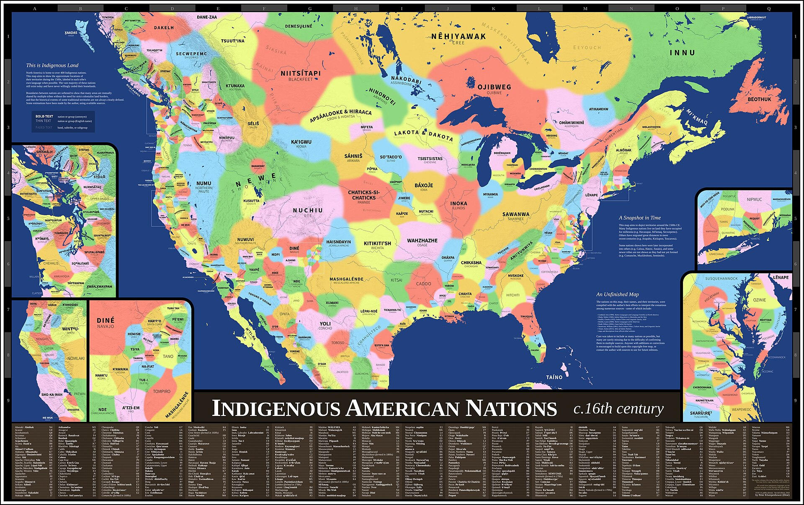
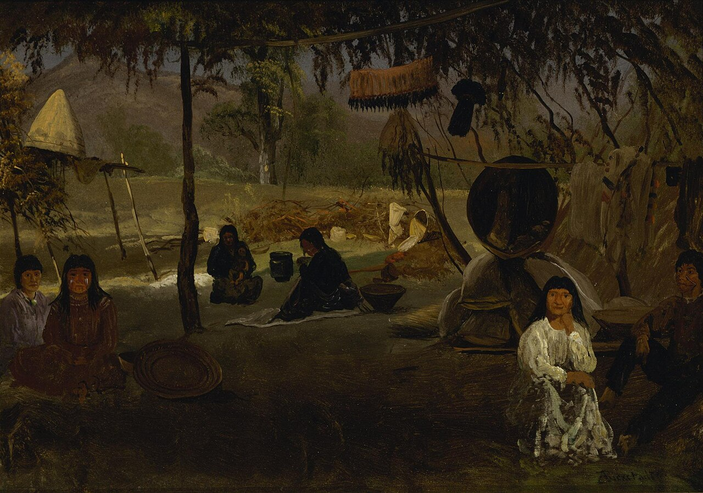
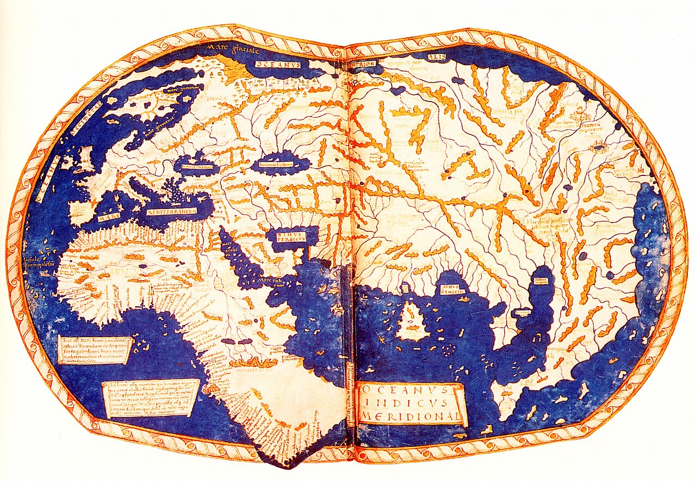
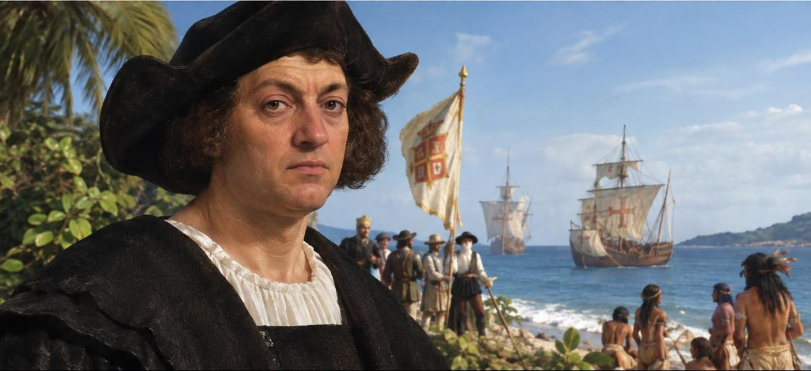
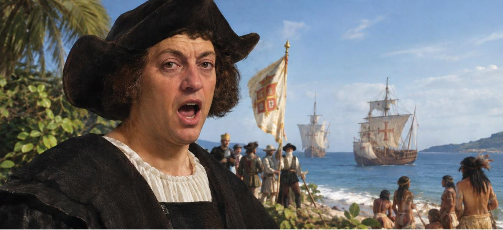
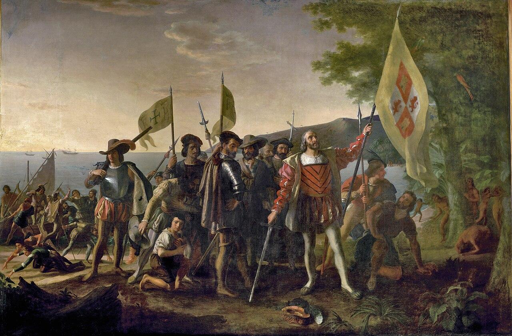
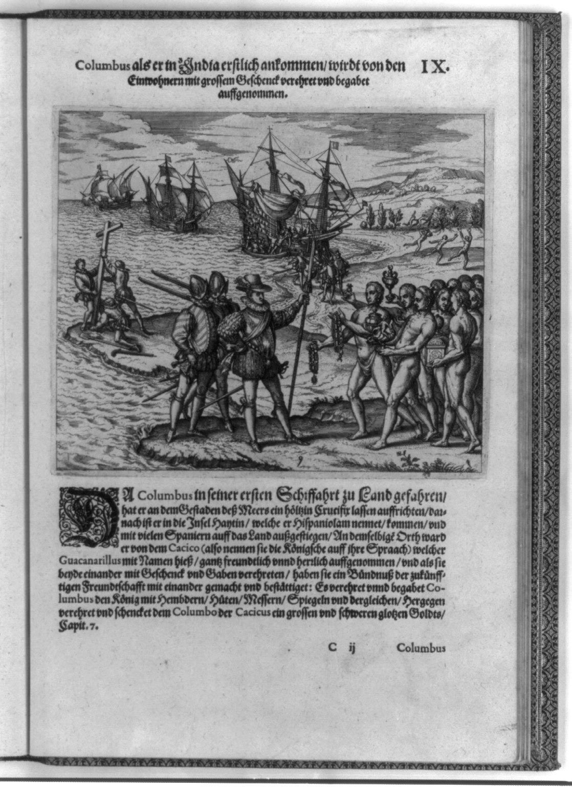
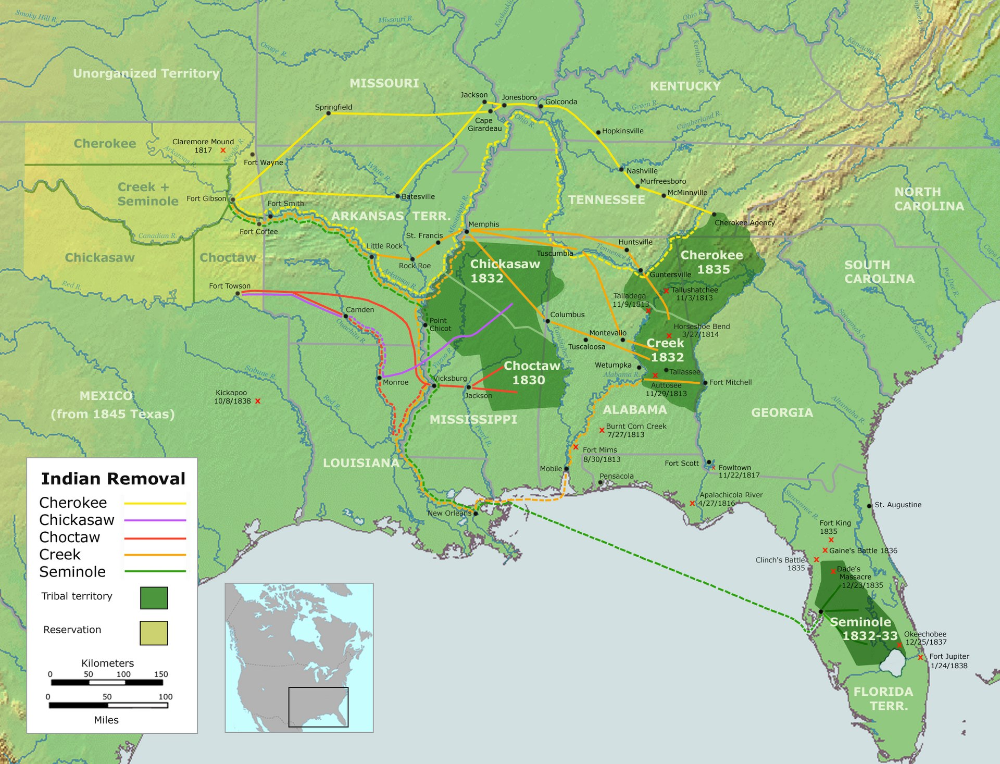
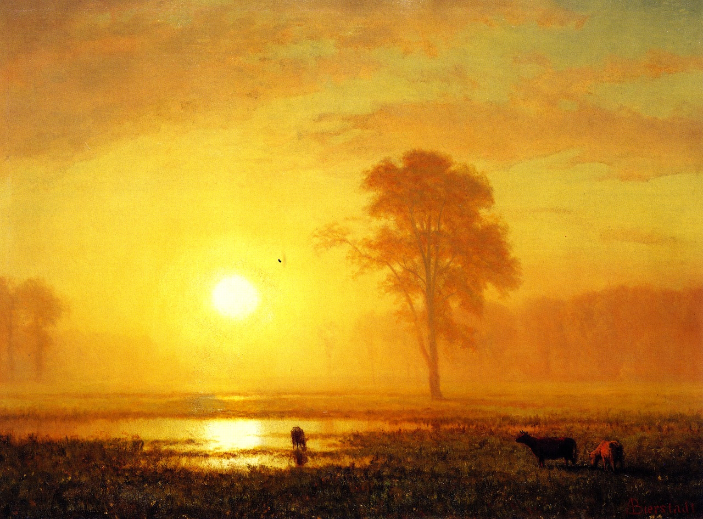
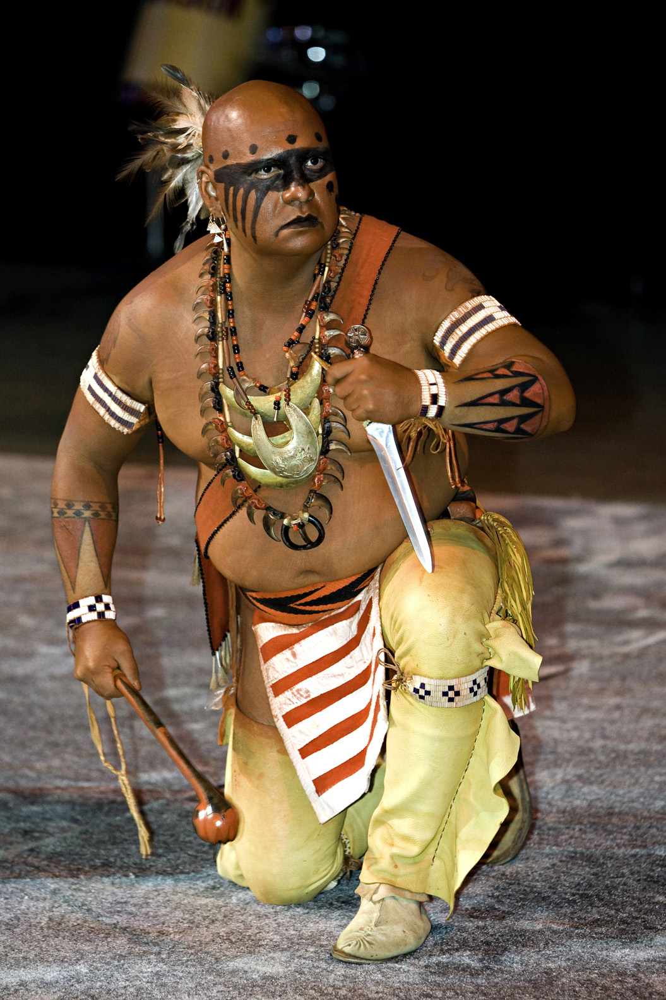

Первые народы Америки
Откуда пришли люди и кто жил на континенте к приходу европейцев

Открыть крупноК 1492 году Америку населяли миллионы людей — сотни народов со своими языками, законами и торговыми путями. Европейцы пришли не на пустую землю.
В ледниковый период уровень моря упал, и Чукотку с Аляской соединила суша. По ней и вдоль побережья в Америку пришли первые люди.
Город на Миссисипи с населением 10–20 тысяч человек. Холм Монкс-Маунд — крупнейшее земляное сооружение доколумбовой Северной Америки.
Многоэтажные дома в скальных нишах Меса-Верде и оросительные каналы в засушливых каньонах.
Голос земли
Рассказ жителя поселения о своём народе, земле и предках

Культура, быт и вера
Земледелие, письмо, жилища и одна из древнейших конфедераций мира
«Три сестры»
Кукурузу, бобы и тыкву сажали вместе: стебель служит опорой бобам, бобы удобряют почву, листья тыквы держат влагу.
Пояса вампум
Узоры из бусин-раковин хранили память о договорах и законах. Хранитель «читал» пояс вслух на совете.
Жилища
Переносные типи кочевников прерий, длинные дома ирокезов, глинобитные дома пуэбло.
Вера
Мир живой и одушевлённый. У лакота — Вакан Танка, у алгонкинов — Маниту: великая сила, пронизывающая всё.
Пять народов — мохоки, онейда, онондага, кайюга и сенека — объединились в союз с общим советом вождей. Вождей назначали старейшие женщины кланов, они же могли их сместить. Время основания спорно: от XII до XV века.
Десятки неродственных языковых семей — алгонкинская, сиуанская, ирокезская, атабаскская. Для общения между племенами на равнинах служил язык жестов.
Принимая решение, думай о том, как оно скажется на потомках через семь поколений.
Путь в Индию на запад
Почему Европа искала новый морской путь и что позволило его найти
В 1453 году турки-османы взяли Константинополь. Сухопутная торговля с Востоком стала дорогой и опасной — пряности и шёлк нужно было везти морем.
Каравелла с косыми парусами могла идти против ветра. Компас и астролябия позволяли держать курс и определять широту вдали от берегов.
Колумб считал Землю меньше, чем она есть, и верил, что Азия лежит всего в нескольких неделях пути на запад. Фердинанд и Изабелла подписали с ним договор в Санта-Фе.

Открыть крупноЕщё три дня
Октябрь 1492 года. Больше месяца в открытом океане, команда требует повернуть назад


«Здесь люди уже не могли больше терпеть и жаловались на долгое плавание. Но Адмирал ободрял их как мог, обещая великие выгоды…» — дневник первого плавания, 10 октября 1492
Корабли ушли от Канарских островов. Колумб записывал в журнал меньшее пройденное расстояние, чтобы не пугать команду.
Моряки «Пинты» выловили зелёный тростник и палочку, «как будто обработанную железом». Земля была близко.
Земля!
Высадка на острове Гуанахани, который Колумб назвал Сан-Сальвадор

Открыть крупноМатрос Родриго де Триана с «Пинты» первым увидел берег в лунном свете. С корабля дали выстрел — условный сигнал.
Колумб сошёл на берег с королевским знаменем и объявил остров владением Испании. Жителей он назвал «индейцами» — он думал, что достиг Индии.
«…все они ходят нагие, в чём мать родила… очень хорошо сложены, тела у них красивые, а лица приятные».
Встреча двух миров
Как таино и испанцы увидели друг друга

Открыть крупноОстровитяне вышли навстречу с подарками: попугаями, мотками хлопковой нити, копьями. Железа они не знали — Колумб записал, что они брали мечи за лезвие и резались.
Колумб сразу спрашивал о золоте. В том же дневнике он пишет, что из жителей «выйдут хорошие слуги» и их легко обратить в христианство.
От болезней, принудительного труда и войн народ таино на Эспаньоле почти исчез к середине XVI века.
Закон о переселении и «Дорога слёз»
Пять народов юго-востока США выселили за реку Миссисипи

Открыть крупноПрезидент Эндрю Джексон подписал закон об обмене земель на востоке на земли к западу от Миссисипи. «Обмен» на деле проводили под давлением и силой.
Около 16 тысяч чероки под конвоем армии прошли больше 1 500 км, многие — зимой и пешком. Погибли, по разным оценкам, около 4 тысяч человек.
Массовое истребление бизонов лишило народы равнин главного источника пищи и вынудило их перейти в резервации.
Опустевшие прерии
Рассказ о том, что было потеряно, и о том, что сохранилось

Коренные народы сегодня
Самоуправление, возрождение языков и живые традиции

Открыть крупноУ признанных племён свои правительства, суды и полиция. Крупнейшая — нация навахо: более 400 тысяч человек.
Школы с обучением на языках навахо, чероки, лакота; словари и приложения. Многие языки ещё под угрозой — но у них снова есть дети-носители.
Песни, барабаны и танцы собирают тысячи людей. Это не музей и не реконструкция, а живая культура.